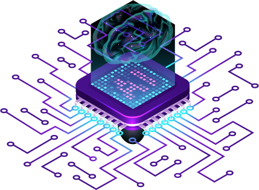

Trending Technologies in Artifical Intelligence

Artificial intelligence is intelligence demonstrated by machines, unlike the natural intelligence displayed by humans and animals, which involves consciousness and emotionality. The distinction between the former and the latter categories is often revealed by the acronym chosen.Colloquially, the term "artificial intelligence" is often used to describe machines that mimic "cognitive" functions that humans associate with the human mind, such as "learning" and "problem solving".
| Advantages | Disadvantages |
|---|---|
| Artifial Intelligence can help humankind in exploring ocean floors, and other difficult areas to overcome the limits of humans | Artificial Intelligence can be misused for other science experiments which can be harmful to the humans and the environment. |
| AI do not require breaks and refreshments like humans, thus, increasing productivity and saving costs for the same. | Overworking of AI can require large scale maintainence which may become expensive |
| Artificial intelligence helps us in reducing the error and the chance of reaching accuracy with a greater degree of precision. | A simple miscalculation may lead to devastating effects in the longer run, thus comprising reliability |